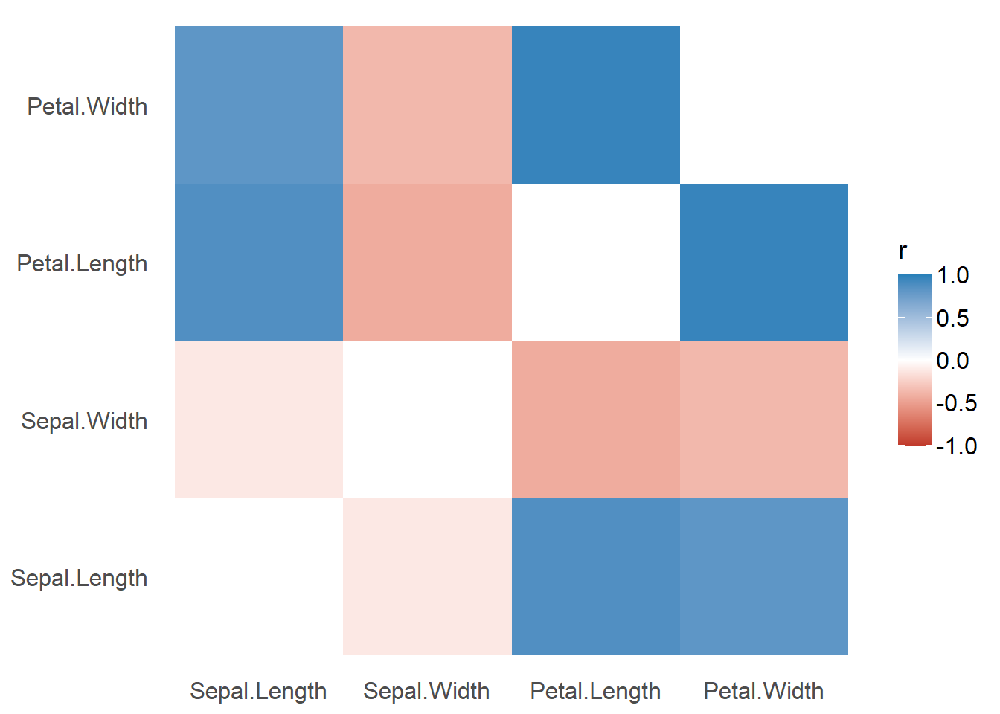
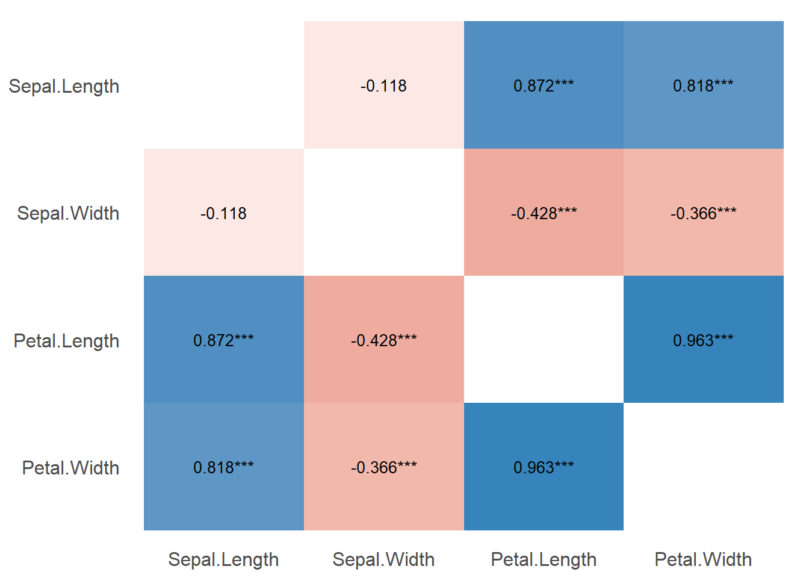

Plotting Functions for the correlation Package
correlation.RmdCorrelation Matrix
(related function documentation)
The default output for correlation() is a detailed overview including test statistic, p-values and confidence intervals. A shorter summary in matrix-layout can be obtained by using summary() or as.table().
result <- correlation(iris)
result
#> Parameter1 | Parameter2 | r | t | df | p | 95% CI | Method | n_Obs
#> ---------------------------------------------------------------------------------------------
#> Sepal.Length | Sepal.Width | -0.12 | -1.44 | 148 | 0.152 | [-0.27, 0.04] | Pearson | 150
#> Sepal.Length | Petal.Length | 0.87 | 21.65 | 148 | < .001 | [ 0.83, 0.91] | Pearson | 150
#> Sepal.Length | Petal.Width | 0.82 | 17.30 | 148 | < .001 | [ 0.76, 0.86] | Pearson | 150
#> Sepal.Width | Petal.Length | -0.43 | -5.77 | 148 | < .001 | [-0.55, -0.29] | Pearson | 150
#> Sepal.Width | Petal.Width | -0.37 | -4.79 | 148 | < .001 | [-0.50, -0.22] | Pearson | 150
#> Petal.Length | Petal.Width | 0.96 | 43.39 | 148 | < .001 | [ 0.95, 0.97] | Pearson | 150
as.table(result)
#> Parameter | Sepal.Length | Sepal.Width | Petal.Length | Petal.Width
#> ----------------------------------------------------------------------
#> Sepal.Length | 1.00*** | -0.12 | 0.87*** | 0.82***
#> Sepal.Width | -0.12 | 1.00*** | -0.43*** | -0.37***
#> Petal.Length | 0.87*** | -0.43*** | 1.00*** | 0.96***
#> Petal.Width | 0.82*** | -0.37*** | 0.96*** | 1.00***The result from as.table() can be used to create a plot.

It is also possible to add correlation coefficients and p-values.

Gaussian Graphical Models (GGMs)
To create a Gaussian Graphical Models plot, the library ggraph needs to be loaded first.
library(ggraph)
result <- correlation(mtcars, partial = TRUE)
result
#> Parameter1 | Parameter2 | r | t | df | p | 95% CI | Method | n_Obs
#> ----------------------------------------------------------------------------------------
#> mpg | cyl | -0.02 | -0.13 | 30 | 1.000 | [-0.37, 0.33] | Pearson | 32
#> mpg | disp | 0.16 | 0.89 | 30 | 1.000 | [-0.20, 0.48] | Pearson | 32
#> mpg | hp | -0.21 | -1.18 | 30 | 1.000 | [-0.52, 0.15] | Pearson | 32
#> mpg | drat | 0.10 | 0.58 | 30 | 1.000 | [-0.25, 0.44] | Pearson | 32
#> mpg | wt | -0.39 | -2.34 | 30 | 1.000 | [-0.65, -0.05] | Pearson | 32
#> mpg | qsec | 0.24 | 1.34 | 30 | 1.000 | [-0.12, 0.54] | Pearson | 32
#> mpg | vs | 0.03 | 0.18 | 30 | 1.000 | [-0.32, 0.38] | Pearson | 32
#> mpg | am | 0.26 | 1.46 | 30 | 1.000 | [-0.10, 0.56] | Pearson | 32
#> mpg | gear | 0.10 | 0.52 | 30 | 1.000 | [-0.26, 0.43] | Pearson | 32
#> mpg | carb | -0.05 | -0.29 | 30 | 1.000 | [-0.39, 0.30] | Pearson | 32
#> cyl | disp | 0.27 | 1.51 | 30 | 1.000 | [-0.09, 0.56] | Pearson | 32
#> cyl | hp | 0.17 | 0.97 | 30 | 1.000 | [-0.19, 0.49] | Pearson | 32
#> cyl | drat | -0.27 | -1.55 | 30 | 1.000 | [-0.57, 0.09] | Pearson | 32
#> cyl | wt | -0.11 | -0.62 | 30 | 1.000 | [-0.44, 0.25] | Pearson | 32
#> cyl | qsec | -0.26 | -1.48 | 30 | 1.000 | [-0.56, 0.10] | Pearson | 32
#> cyl | vs | -0.32 | -1.85 | 30 | 1.000 | [-0.60, 0.03] | Pearson | 32
#> cyl | am | -0.25 | -1.39 | 30 | 1.000 | [-0.55, 0.11] | Pearson | 32
#> cyl | gear | -0.35 | -2.04 | 30 | 1.000 | [-0.62, 0.00] | Pearson | 32
#> cyl | carb | 0.23 | 1.27 | 30 | 1.000 | [-0.13, 0.53] | Pearson | 32
#> disp | hp | 0.54 | 3.52 | 30 | 0.072 | [ 0.24, 0.75] | Pearson | 32
#> disp | drat | 0.10 | 0.53 | 30 | 1.000 | [-0.26, 0.43] | Pearson | 32
#> disp | wt | 0.76 | 6.43 | 30 | < .001 | [ 0.56, 0.88] | Pearson | 32
#> disp | qsec | -0.31 | -1.80 | 30 | 1.000 | [-0.60, 0.04] | Pearson | 32
#> disp | vs | -0.10 | -0.57 | 30 | 1.000 | [-0.44, 0.25] | Pearson | 32
#> disp | am | -0.07 | -0.37 | 30 | 1.000 | [-0.41, 0.29] | Pearson | 32
#> disp | gear | 0.06 | 0.34 | 30 | 1.000 | [-0.29, 0.40] | Pearson | 32
#> disp | carb | -0.66 | -4.77 | 30 | 0.002 | [-0.82, -0.40] | Pearson | 32
#> hp | drat | -0.06 | -0.34 | 30 | 1.000 | [-0.40, 0.29] | Pearson | 32
#> hp | wt | -0.30 | -1.72 | 30 | 1.000 | [-0.59, 0.06] | Pearson | 32
#> hp | qsec | -0.05 | -0.29 | 30 | 1.000 | [-0.39, 0.30] | Pearson | 32
#> hp | vs | 0.27 | 1.55 | 30 | 1.000 | [-0.08, 0.57] | Pearson | 32
#> hp | am | 0.10 | 0.55 | 30 | 1.000 | [-0.26, 0.43] | Pearson | 32
#> hp | gear | 0.11 | 0.59 | 30 | 1.000 | [-0.25, 0.44] | Pearson | 32
#> hp | carb | 0.50 | 3.19 | 30 | 0.167 | [ 0.19, 0.72] | Pearson | 32
#> drat | wt | -0.11 | -0.62 | 30 | 1.000 | [-0.44, 0.25] | Pearson | 32
#> drat | qsec | -0.06 | -0.33 | 30 | 1.000 | [-0.40, 0.29] | Pearson | 32
#> drat | vs | 0.03 | 0.14 | 30 | 1.000 | [-0.33, 0.37] | Pearson | 32
#> drat | am | 0.12 | 0.68 | 30 | 1.000 | [-0.24, 0.45] | Pearson | 32
#> drat | gear | 0.06 | 0.35 | 30 | 1.000 | [-0.29, 0.40] | Pearson | 32
#> drat | carb | 0.21 | 1.18 | 30 | 1.000 | [-0.15, 0.52] | Pearson | 32
#> wt | qsec | 0.55 | 3.57 | 30 | 0.063 | [ 0.24, 0.75] | Pearson | 32
#> wt | vs | -0.06 | -0.36 | 30 | 1.000 | [-0.40, 0.29] | Pearson | 32
#> wt | am | 0.02 | 0.10 | 30 | 1.000 | [-0.33, 0.36] | Pearson | 32
#> wt | gear | -0.13 | -0.71 | 30 | 1.000 | [-0.46, 0.23] | Pearson | 32
#> wt | carb | 0.62 | 4.30 | 30 | 0.009 | [ 0.34, 0.80] | Pearson | 32
#> qsec | vs | 0.35 | 2.02 | 30 | 1.000 | [ 0.00, 0.62] | Pearson | 32
#> qsec | am | -0.32 | -1.84 | 30 | 1.000 | [-0.60, 0.03] | Pearson | 32
#> qsec | gear | -0.10 | -0.56 | 30 | 1.000 | [-0.43, 0.26] | Pearson | 32
#> qsec | carb | -0.25 | -1.40 | 30 | 1.000 | [-0.55, 0.11] | Pearson | 32
#> vs | am | -0.21 | -1.18 | 30 | 1.000 | [-0.52, 0.15] | Pearson | 32
#> vs | gear | 0.04 | 0.22 | 30 | 1.000 | [-0.31, 0.38] | Pearson | 32
#> vs | carb | -0.09 | -0.50 | 30 | 1.000 | [-0.43, 0.27] | Pearson | 32
#> am | gear | 0.28 | 1.58 | 30 | 1.000 | [-0.08, 0.57] | Pearson | 32
#> am | carb | -0.05 | -0.25 | 30 | 1.000 | [-0.39, 0.31] | Pearson | 32
#> gear | carb | 0.43 | 2.59 | 30 | 0.727 | [ 0.09, 0.68] | Pearson | 32
plot(result)